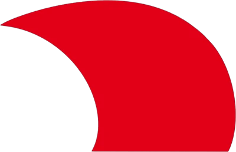

Built in layers
Camera, sensors, flight computer, radio and battery, stacked inside one 66 mm can.

Mission ImpossibleThe basics
A CanSat is a small satellite built to the size of a soft drink can. It carries what a real satellite needs, and its mission runs while it falls.
Ø 66 mm × 115 mm, about 350 ml.
Power, computer, radio, sensors and camera.
The mission runs during the descent.
Recovered together with its data.
Mission 01
Log images, timestamps, temperature, humidity, altitude, and PM2.5 throughout the descent, with live 1 Hz telemetry.
Camera, sensors, flight computer, radio and battery, stacked inside one 66 mm can.
Images, timestamps, temperature, humidity, altitude and PM2.5, logged for the whole fall.
One telemetry packet every second, from release to touchdown.
Mission 02
Measure the surface temperature at the landing site, along with its GPS position and the final camera frame before touchdown, to test whether the type of surface explains the measured surface temperature.
Taken at the landing site.
Where exactly it came down.
The last image before touchdown.
Does the type of surface explain its temperature?
Impact
What a low cost descent and landing site record can be used for.
Warn people with asthma or respiratory conditions about dust near street level, and inform when to limit outdoor activity.
Guide where to mount fixed monitors, and test whether low cost vertical sampling (drone, balloon or CanSat) can complement them.
Show which surfaces (asphalt, sand, grass) get hottest, to guide shade, tree planting and cool pavement choices.
Inform pedestrian comfort and where hot, dusty air collects near tall buildings.
Dust and surface heat both reduce panel efficiency, so the data supports cleaning schedules and siting.
Air temperature, humidity and density help estimate lift, battery use and safe landing zones.
Landing position and surface type help predict where parachuted payloads come down and whether the ground is safe.
Low altitude profiles over cities are sparse, so even a single flight adds a data point.
Supports dust control and site monitoring around building works.
Gives future student teams a method and baseline, and makes a simple story for school demos.
The CanSat starts high above the surface. Scroll to follow it down.
Sensors log the air and camera frames, sending one packet every second.
The last frame, the GPS fix and the surface temperature are captured here.
Stylised illustration, not to scale. Move your cursor to tilt the view.
Timeline
Like a real satellite mission, the competition runs through five reviews. Select a milestone to see what it covers and where we stand.
Five students and one supervisor, on one ring.
Drag to spin the ring. Hover a card to bring it closer, click to open it.Swipe to spin the ring. Tap a card to open it.